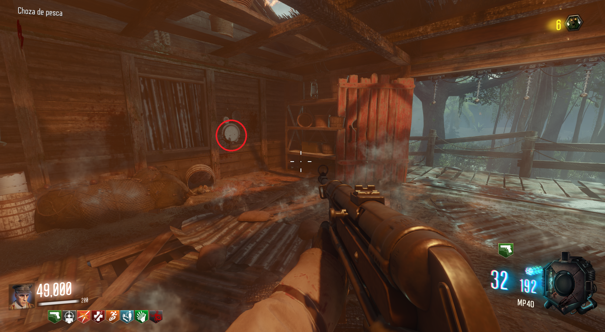
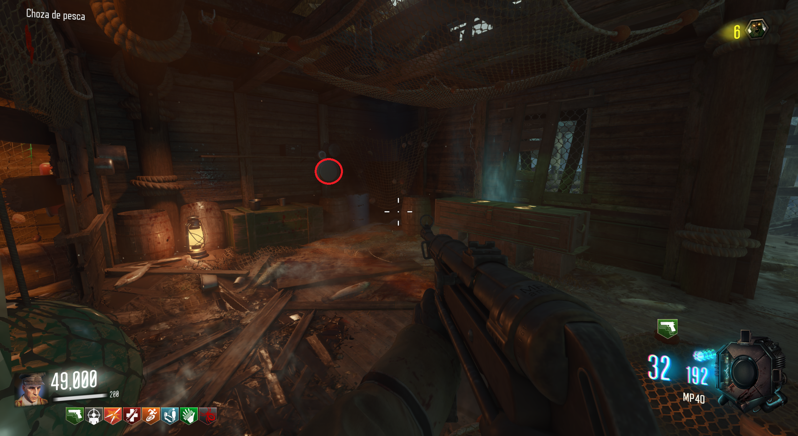
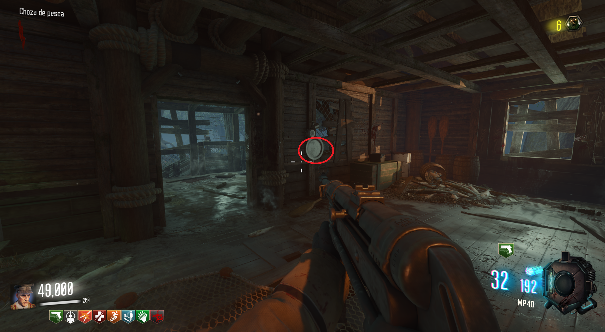
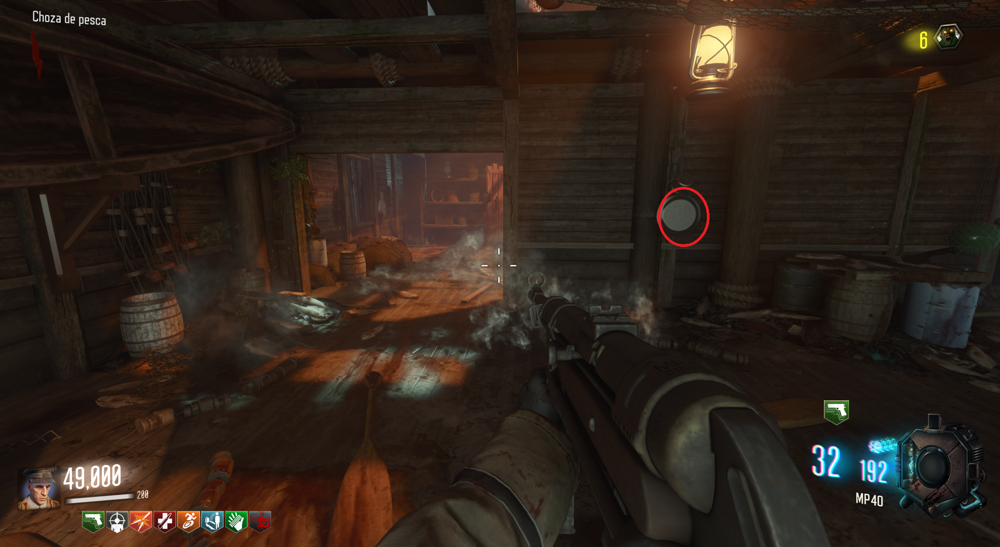
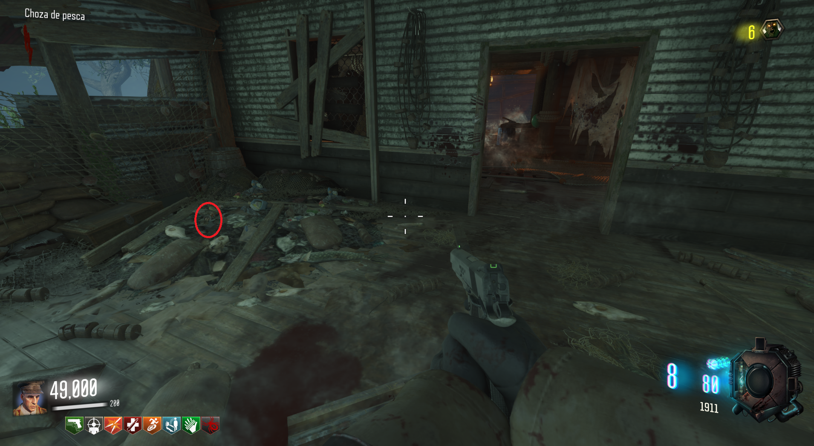
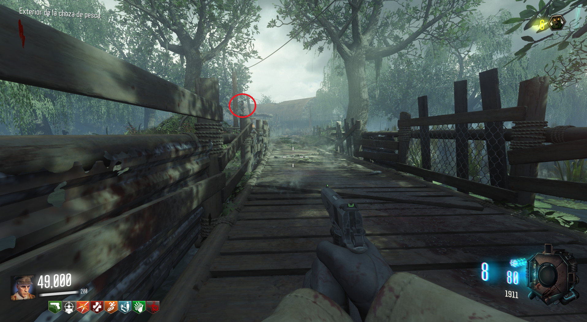
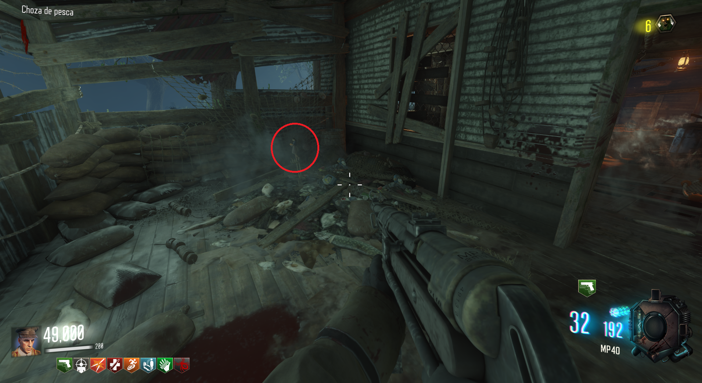

Para reproducir la canción deberemos de disparar a los cuatro calderos dentro de la cabaña de pesca con la pistola 1911.




Activaremos la muñeca de Samantha que encontraremos fuera de la cabaña.

Acontinuación, dispararemos a 5 figuras encima de los palos del puente.

Volveremos a activar la muñeca de Samantha, la canción empezará a sonar y el Max Ammo aparecerá.
